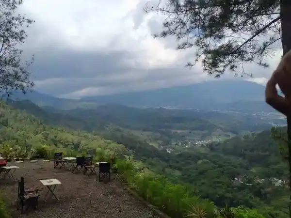
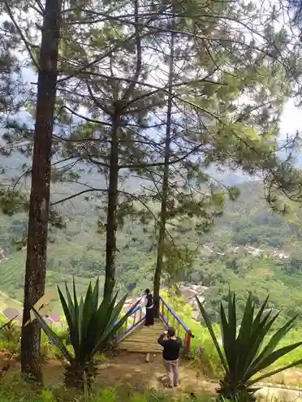
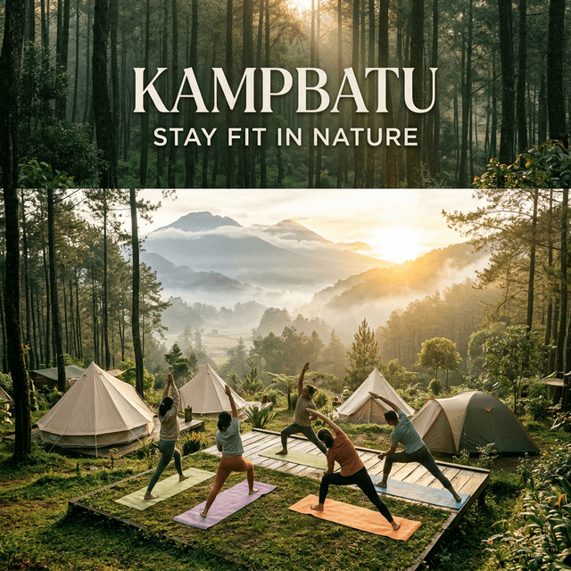

Kawasan pegunungan seperti Batu Malang menjanjikan pengalaman menikmati keindahan alam dan kesejukan yang hakiki. Namun, cuaca pegunungan membawa dinamikanya sendiri — salah satunya adalah hembusan angin yang bisa datang tiba-tiba dengan kekuatan yang tidak bisa diremehkan.
Bagi pendaki veteran atau mereka yang sering berkemah, berhadapan dengan angin gunung mungkin sudah menjadi rutinitas. Namun bagi keluarga pemula atau rombongan wisata kemping, tenda yang "tiarap" di tengah malam akibat diterpa angin bisa menjadi pengalaman traumatis yang bisa merusak keseruan liburan semalaman. Oleh perihal tersebut, mengetahui strategi teknis mendirikan tenda kemah yang kokoh sejatinya adalah keterampilan dasar mutlak sebelum Anda membentangkan frame di alam bebas.
"Sebuah tenda bukan hanya sekadar kain yang dibentangkan. Ia adalah benteng pelindung sementara Anda. Pemasangan yang kokoh menjamin kenyamanan fisik serta ketenangan batin sepanjang malam." - Adiel Ebert
1. Strategi Dasar: Memahami Arah Angin dan Memilih Lokasi "Berlindung"
Kesalahan fatal dan paling umum terjadi adalah pengabaian orientasi arah mata angin. Sebelum mulai menurunkan peralatan dari bagasi kendaraan, langkah pertama yang mutlak dilakukan adalah **survey lokasi mikro**. Carilah tanda-tanda alam yang menunjukkan dari mana angin bertiup secara dominan.
1.1 Jangan Melawan, Namun Belokkan Angin
Ketika Anda sudah mengetahui arah hembusan angin utama, pastikan posisi pintu masuk tenda tidak menghadap langsung ke asal datangnya angin tersebut. Pintu yang terbuka dan menghadap angin akan membuat tenda Anda berfungsi menangkap udara layaknya parasut, memberikan tekanan luar biasa pada kerangka tiang (frame) tenda yang berisiko mamatahkannya.
Posisikan bagian ekor atau dinding tenda yang permukaannya paling aerodinamis (rendah dan lancip) untuk membelah hembusan tersebut.
Baca Juga
2. Eksekusi Pemasangan Tenda yang Tepat Menghadapi Badai
Meski tenda modern saat ini sebagian besar didesain dengan sifat aerodinamika bawaan seperti *dome tent*, efektivitas kerangka pelindung tersebut hanya akan berfungsi 100% apabila dieksekusi pemancangannya dengan benar.
2.1 Guyline Adalah Kunci Stabilitas
Banyak pemula malas mengulur dan menambatkan **guyline** (tali pancang pada sisi-sisi flysheet tenda), menganggapnya hanya hiasan. Padahal guyline inilah penahan torsi utama saat bagian tengah tenda Anda diterjang badai. Tali harus diulur lurus dari titik tambatan mengikuti simetri tarikan frame dengan sudut sekitar 45 derajat menuju ke tanah.
Pastikan Anda menggunakan **pasak (peg)** dengan memukulnya menancap sempurna di tanah membentuk sudut kemiringan (sekitar 45 derajat berlawanan arah tarikan tali). Jangan memasang pasak tegak lurus (90 derajat) karena angin bisa dengan mudah mencabut pasak tersebut dari tekstur tanah basah pegunungan.

2.2 Menutup Celah Angin (Flysheet)
Lapisan penutup luar (flysheet) bukan sekadar berfungsi menahan embun es atau hujan gerimis. Ia juga wajib dikunci membentang kencang membungkus seluruh lapis tenda utama tanpa bersentuhan agar kelembapan terbuang turun. Pastikan mengikat setiap lidah ritsleting dengan kokoh karena hembusan yang lolos menembus flysheet yang kendor bisa berpotensi membengkakkan dan merobek lapisannya di malam hari.

3. Trik Darurat Jika Terlanjur Tenda Meliuk Tersapu Angin
Kondisi alam bisa saja sangat ekstrem di luar prediksi BMKG Anda. Misalnya Anda dikagetkan oleh liukan tiang frame yang secara berlebihan melengkung hingga nyaris menyentuh lantai matras tempat Anda tidur. Anda butuh tindakan pencegahan tambahan.
- Gunakan Perkuatan Benda Berat: Angkat batu-batu ukuran sedang atau gunakan kayu/gelondongan berat sebagai penindih darurat ekstensi di pangkal ujung pasak.
- Reposisi Kendaraan: Apabila Anda berkemah ceria ala *motocamp* atau *car camp*, tempatkan posisi mobil/motor tepat beberapa desimeter melapis blok pandangan sisi tenda tempat angin membombardir area lapang Anda.
4. FAQ Seputar Tenda Anti Angin di Batu
5. Kesimpulan
Liburan ceria di alam tidak boleh diuji nyalinya dengan tiang tenda yang bertebangan di tengah gelap gulita malam hari. Penerapkan fondasi pasak 45 derajat, penambatan tali *guyline*, dan pemilihan arah aerodinamis mutlak diaplikasikan sebelum Anda fokus membuat segelas kehangatan mi instan.
Jangan biarkan liburan keluarga di Batu Malang berubah menjadi drama membongkar patahan kemah. Hubungi pihak pengelola lapangan terpercaya kami bila membutuhkan peralatan instalasi level profesional yang aman menahan goncangan alam.
Adiel Ebert Nakula Shandy
Teknisi lapangan serta pemandu wisata alam ekstrem area Jawa Timur. Spesialis perencanaan *adventure travel*, navigasi darat, dan survival.